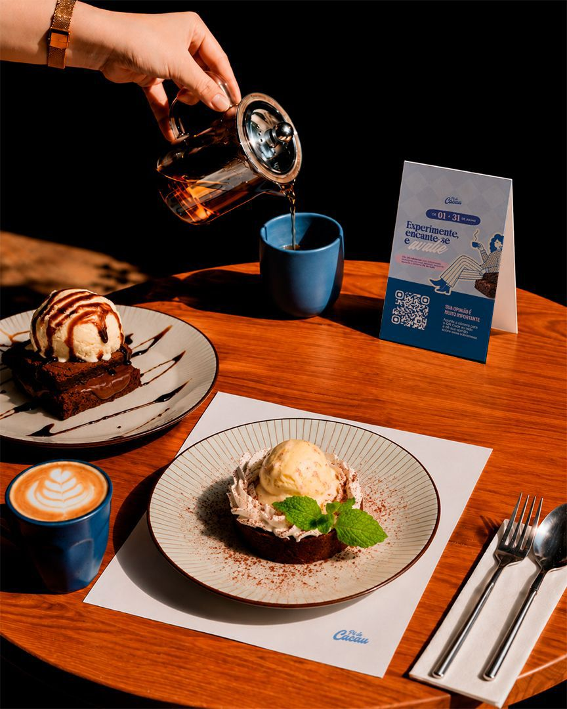

A sua próxima
sobremesa favorita
em Juiz de Fora.

O Pé de Cacau surge como o aquecimento ideal para quem está com saudades do Pé de Café, o concurso de cafeterias que acontece anualmente em Juiz de Fora.
Diferente do Pé de Café, onde cada participante oferece um combo completo (doce, salgado e bebida), o Pé de Cacau nasceu com o foco exclusivo em celebrar as sobremesas que tanto amamos.
Nesta edição de aquecimento, selecionamos 26 cafeterias parceiras para criarem receitas autorais incríveis com o ingrediente protagonista, todas ao preço fixo promocional de R$ 25. É a oportunidade perfeita de explorar novos sabores na cidade!
Como funciona o festival
Três passos simples para adoçar o seu mês
1. Escolha & Visite
Navegue pelas cafeterias participantes e vá até os estabelecimentos experimentar as receitas especiais do evento.
2. Valor Fixo
Todas as receitas exclusivas criadas para o Pé de Cacau possuem o valor único de R$ 25.
3. Vote no Site
Escaneie o QR Code em cada mesa, avalie as sobremesas e ajude a eleger a grande vencedora.